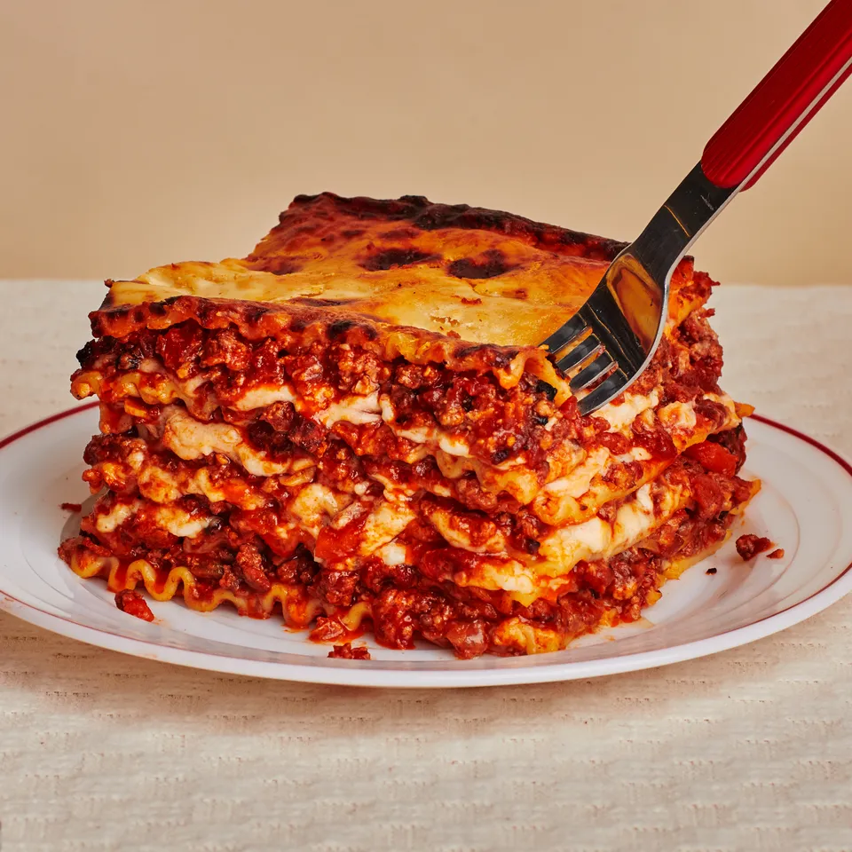

Lasagna
Home

Pictured: Chris Morroco's lasagna, a damn fine one
Link
Description
This recipe descripes the semi lazy way that I make lasagna.
Ingredients
- Ground beef, 400g
- Bacon slices, 150g
- 1/2 onion, peeled: about 60g
- 1 medium carrot, peeled: about 60g
- 1 celery stalk, trimmed: about 60g
- Chopped canned tomatoes, 200g
- Tomato paste, 1 tbsp
- 1/2 cup of whole milk
- Light meat or vegetable broth
- Extra virgin olive oil, 3 tbsp
- Salt and pepper
- Pasta sheets
- Bechamel or Mornay sauce
Steps
- Toss all your bacon and ground beef in a big pan, on high heat untill all the water evaporates, stirring intermittently. Once the water is gone turn down the heat to medium and keep stirring untill all the meat is brown & crispy. If the meat is turning black during this stage the pan is too hot or you are not stirring sufficiently. While stirring make sure to stab the meat with the pointy end of your spatula to break it into bite sized pieces, or leave whole for an adventure.
- While the meat is steaming away, blend all the onion, carrot, sellery in a food processor or chop finely. If the blender gets stuck add the milk or canned tomatoes to help it process.
- After the meat has become crispy, turn down the heat to low and add the tomato paste and stir around untill there is no more scent of tomato paste. The pan will also look considerably more orange instead of red.
- Add the vegetable mixture along with the rest of the wet ingredients.
- Bring to a boil, and then reduce to a simmer. Let it rip for 2-3 hours. If impatient increase the heat, and reduce untill it looks like one homogenous mixture of meat and red sauce.
- Bring about your vehicle of lasagna and alternate layers of pasta sheets, sauce and store baught bechamel/mornay.
- Put in the oven at 180 science degrees until the edges look golden brown and delicious.